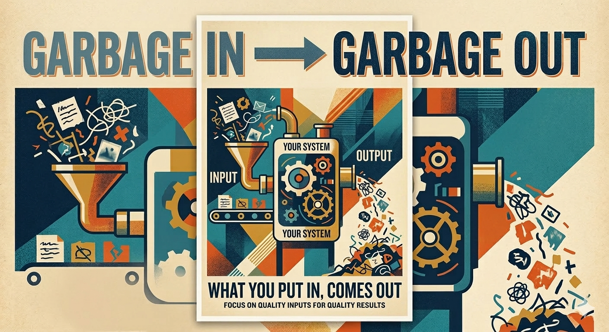

Introduction to C++
while and do-whileUnvalidated input is the most common source of program failures. If bad data enters your program, bad output (or a crash) follows.

Input validation prevents crashes, wrong output, and security holes. As a programmer, you are responsible for ensuring that only sensible data enters your program’s logic.
Always check input immediately after reading it from the user. Validate at the boundary—right where data enters your program. Use clear error messages that tell the user exactly what was wrong and what is expected.
Separate validation logic from business logic. Write reusable validation functions rather than scattering checks throughout your code. Document what “valid” means for each input field.
Assuming the user will enter correct data is the root of most validation bugs. Never skip validation for “trusted” sources; corners of your code that seemed safe can become entry points later. Vague error messages (“Invalid input”) frustrate users and make debugging harder.
Validating too late (after the data has been used in calculations) allows bad data to corrupt results. Validating in too many places creates inconsistency and maintenance headaches.
A program asks for a percentage (0–100). Without validation, entering “150” silently calculates wrong results. With validation, you reject 150 and ask again. A program asks for an age in years. Entering “-5” should be caught immediately, not stored in the database and discovered months later.
A program reads a file path from the user. Validation ensures the path is not empty and exists before attempting to open it.
Write a function that validates a user’s age input (must be between 0 and 150). What should it return if the input is invalid?
Describe what a program should do if a user enters a non-numeric value when an integer is expected.
List three types of bad input your program might receive and the consequences if not caught.
Why is input validation considered a security issue, not just a correctness issue? What is the difference between validation that prevents crashes and validation that prevents logic errors? How does a program know what “valid” means for a given input field?
Presence validation checks whether data exists at all.
Example: a form field that requires a name. An empty string fails presence validation. This is the first gate: no data means no valid input.
Set membership validation checks whether the input is one of a specific list of allowed values. A menu might accept only “A”, “B”, or “C”; a response field might accept only “Yes” or “No”.
This is a whitelist approach: only explicitly approved values are accepted. Everything else is rejected.
Whether the input makes sense in the context of your program’s rules.
An end date must be after a start date.
A discount percentage cannot exceed 100%.
A withdrawal amount cannot exceed account balance.
Consistency validation ensures new input agrees with data already in the system (e.g., a zip code matches the city entered earlier).
The seven validation types—presence, data type, range, format, set membership, business logic, and consistency—cover all common checks. Apply them in order: first verify data exists, then its type, then its bounds, format, and allowed values, then logic and consistency rules.
Apply validation checks in layers, starting with presence and type, then range and format, then business logic. This order prevents crashes before logic errors. Use helper functions for each validation type—one function for range, one for format, etc.—to keep code readable and reusable.
Document what valid input means for each field. Include constraints in comments or assertions. When validation fails, report which type of validation failed (e.g., “Range error: value must be 0–100”) so the user knows how to correct it.
Mixing multiple validation types in a single function makes code hard to debug and reuse. Validating inconsistently (checking format in one place, range in another) allows invalid data to slip through.
Forgetting presence and type checks and jumping straight to range checks causes crashes when data doesn’t exist or is the wrong type. Validating too strictly (rejecting valid input due to overly narrow rules) frustrates users.
Presence: checking that a user’s name field is not empty. Data type: ensuring an age input can be parsed as an integer. Range: ensuring a month value is 1–12. Format: checking that a phone number matches “XXX-XXX-XXXX”. Set membership: allowing only “M” or “F” for gender. Business logic: checking that a loan end date is after the start date. Consistency: checking that a zip code matches the state the user entered.
For a program that reads a birth year (must be 1900–2026), which validation types must you apply and in what order?
A form asks for a country name. What validation type ensures the input is one of your program’s supported countries?
Write a scenario where business logic validation is necessary but range validation alone is not enough.
When would consistency validation matter in a multi-step form?
Why is the order of validation types important? Can you think of a real application where all seven types are needed? Which validation type is hardest to implement correctly?
How should we structure validation in a real program? Are there different patterns for organizing validation logic, each suited to different scenarios?
cin successfully read an integer before checking its range or format.Use loop-until-valid as your default architecture for interactive input. Always check cin.fail() after reading, and clear the input buffer with cin.clear() and cin.ignore() on failure. Build a library of reusable validation functions (e.g., isValidAge(), isValidPhoneNumber()) and call them consistently.
Document which architecture you’re using and why. For inline validation, keep checks close to where data is used. For loop-until-valid, keep the loop condition clear and the error message helpful.
Forgetting to clear the input buffer after a cin failure causes the failed input to remain, blocking all subsequent reads. Mixing inline and loop-based validation in the same program creates inconsistency and confusion.
Using blacklist validation when whitelist is safer (e.g., accepting any string that doesn’t look like a SQL injection, rather than accepting only known-good values). Leaving validation logic scattered throughout the code instead of consolidating it into reusable functions.
Loop-until-valid example: ask for an age. Read a value. If it’s out of range, print “Age must be 0–150” and loop back. Type-first example: attempt to read an integer. If cin.fail() is true, clear the buffer, print “Please enter a number”, and ask again.
Whitelist example: accept only menu choices “A”, “B”, or “C”. Reject anything else. Inline validation: after reading a test score, immediately check if it’s 0–100 before using it in a GPA calculation.
Write a loop-until-valid pattern for reading an integer between 1 and 10. What happens if the user enters “abc”?
Explain how to clear the input buffer in C++ after a failed cin read.
Compare whitelist and blacklist validation for a program that asks “Did you finish your homework?” (valid answers: “yes” or “no”).
When might inline validation be preferable to loop-until-valid, and when might it fall short?
Why is loop-until-valid considered safer than inline validation? What advantage does type-first validation provide? Can you describe a program where whitelist validation is essential for security?
What does it mean to validate input right where it’s used, rather than in a separate validation function?
Range checking verifies that a value falls between a minimum and maximum. Use AND (&&) to test both boundaries at once.
When cin >> x fails the input stream enters a failed state. You must clear the error flag and discard bad input.
When multiple conditions can invalidate input, use a boolean flag to track validity. Set the flag to true if any check fails, then use it to decide how to proceed.
Inline validation is the simplest approach: read input, test it with a condition, respond immediately in an if block.
Always use named constants for range boundaries (MIN_VALUE, MAX_VALUE) instead of hardcoding numbers. This makes code self-documenting and simplifies maintenance.
When cin >> fails, always call both cin.clear() and cin.ignore(10000, '\n') to reset the stream and skip the bad input. The 10000 parameter is a large number that safely discards any remaining characters on the line.
Forgetting to clear the input stream — After a type mismatch, if you don’t call cin.clear(), the stream remains in a failed state and all subsequent reads will fail silently.
Using magic numbers for bounds — Hardcoding if (age > 120) instead of if (age > MAX_AGE) makes code harder to maintain and understand. Always use constants.
Mixing validation logic — Don’t scatter checks across multiple unrelated if statements. Group related validation checks together or use a isDirty flag to keep logic coherent.
Example 1: Email string length check
Example 2: Character classification inline
Write code to validate that a temperature is between -50 and 150 degrees Fahrenheit. Use named constants and print an error message if out of range.
Write code to read an integer and check if the input operation failed. If it did, clear the stream and print an error message.
Use a isDirty flag to validate that a username is non-empty and contains no spaces. Set the flag to true if either check fails.
Write code to validate that a character input is a lowercase letter using islower().
When should you use inline validation instead of a loop-until-valid approach?
Why must you call both cin.clear() and cin.ignore() after a type failure, not just one?
When is a isDirty flag useful, and when might simpler direct if statements be clearer?
How does using named constants improve the readability and maintainability of validation code?
The loop condition val < MIN || val > MAX means “keep looping if the value is out of range.” Once the user enters a valid value, the condition becomes false and the loop exits.
When cin fails to read the expected type, the stream enters a fail state. You must clear this state and discard the invalid input before trying again.
The loop body runs first, gets the input, and then checks the condition. If invalid, it loops back to the beginning of the do block and re-prompts. No priming read needed.
Stream error handling inside a do-while works the same as in a while loop. Clear the fail state and discard bad input before looping.
int val;
do { // .............................. prompt loop
cout << "Enter an integer (1-100): ";
if (!(cin >> val)) { // ......... check the type
cin.clear();
cin.ignore(numeric_limits<streamsize>::max(), '\n');
val = -1; //........................Force invalid to loop again
}
} while (val < 1 || val > 100); //.......numeric range validationUse a while loop with a priming read: get input once before the loop, then loop while the input is invalid. Always include error handling with cin.clear() and cin.ignore() for type mismatches.
A do-while loop validates input without a priming read. The body executes first, then the condition at the bottom decides whether to repeat. Use do-while when the prompt and input must run at least once.
Always include the re-prompt message in the loop body so the user sees it after an invalid entry. The initial prompt appears before the loop; the reprompt appears inside it.
Use named constants for range bounds (MIN_SCORE, MAX_SCORE) in both the output message and the loop condition. This keeps the bounds consistent and self-documenting.
Choose whitelist when you have a small set of acceptable values and blacklist when you want to reject only a few specific inputs. Avoid long lists of whitelisted values; use a range loop instead.
Forgetting the reprompt inside the loop — The loop condition repeats, but if you don’t print a new prompt inside the loop body, the user won’t know they need to re-enter data.
Using AND in a whitelist when you need OR — The condition response == "yes" && response == "no" is always false (one variable cannot equal two different strings). Use OR: response != "yes" && response != "no".
Mixing whitelist and blacklist logic — Don’t test response == "yes" && response != "no" in the loop condition. Pick one approach and stick with it for clarity.
Not handling type failures in the loop — If the user enters text when you expect a number, cin >> fails and the loop repeats on old input. Clear the stream inside the loop if needed.
Example 1: Do-while reprompt (guarantees at least one prompt)
The do-while structure ensures the prompt appears at least once before the condition is checked.
Example 2: Whitelist with multiple acceptable responses
Write a loop that prompts for a number between 1 and 10 (inclusive) and re-prompts until valid input is received.
Write a whitelist loop that accepts only “rock”, “paper”, or “scissors”. Re-prompt if input doesn’t match any of these.
Write a do-while loop that prompts for a password and requires the user to enter it at least once, even if it’s valid on the first try.
Write a blacklist loop that rejects the word “admin” but accepts any other input.
Combine range checking and input type failure: write a loop that validates both that the input is an integer and that it falls within a range.
When should you use loop-until-valid instead of inline validation with an error message?
Why is the whitelist approach using OR (&& between != checks) logically correct for continuing the loop?
What is the advantage of a do-while loop for input validation compared to a standard while loop?
How would you handle a type failure (user enters text instead of a number) inside a range loop?
What is the difference between ++x and x++?
for (int i = 0; i < 10; i++) andfor (int i = 0; i < 10; ++i) behave identically.++x): Increment first, then use the value.x++): Use the value first, then increment.Pre-increment (++x) and post-increment (x++) both add 1 to the variable, but pre-increment returns the new value while post-increment returns the old value. For simple loop counters, the difference is negligible.
++i in loops when possible. Pre-increment is marginally more efficient (though modern compilers optimize this away) and signals intent clearly.x++;, the choice doesn’t matter.y = x++, y gets the old value of x; in y = ++x, y gets the new value.for (int i = 0; i < 10; i++), don’t waste mental energy on the distinction—it doesn’t matter.y after int x = 3; int y = ++x;?y after int x = 3; int y = x++;?int a = 5; cout << a++ << " " << a << endl;i++ and ++i?++i and i++ in loops?How do you exit a loop before the loop condition becomes false?
break StatementThe break statement exits the nearest enclosing loop immediately, skipping any remaining iterations.
break vs. Loop ConditionYou can achieve the same result by adjusting the loop condition, but break is often clearer when the exit condition is a special value (sentinel).
Use break to exit a loop early when a sentinel value or stopping condition is detected. It’s clearer and more direct than restructuring the loop condition.
Given a loop with a break statement, what does the program print?
What is the output?
Iteration 1: x becomes 1. Is x == 3? No. Print 1.
Iteration 2: x becomes 2. Is x == 3? No. Print 2.
Iteration 3: x becomes 3. Is x == 3? Yes. break executes. Exit loop (nothing printed this iteration).
The key insight: the break happens after x is incremented but before the print statement.
Trace loop execution step-by-step: increment, check the break condition, then execute the remaining statements. The break exits immediately, skipping any code after it in that iteration.
while requires a priming read; do-while does not.++ and -- behave differently in prefix vs. postfix position.break exits immediately — use it deliberately.CISP 360 · Fowler